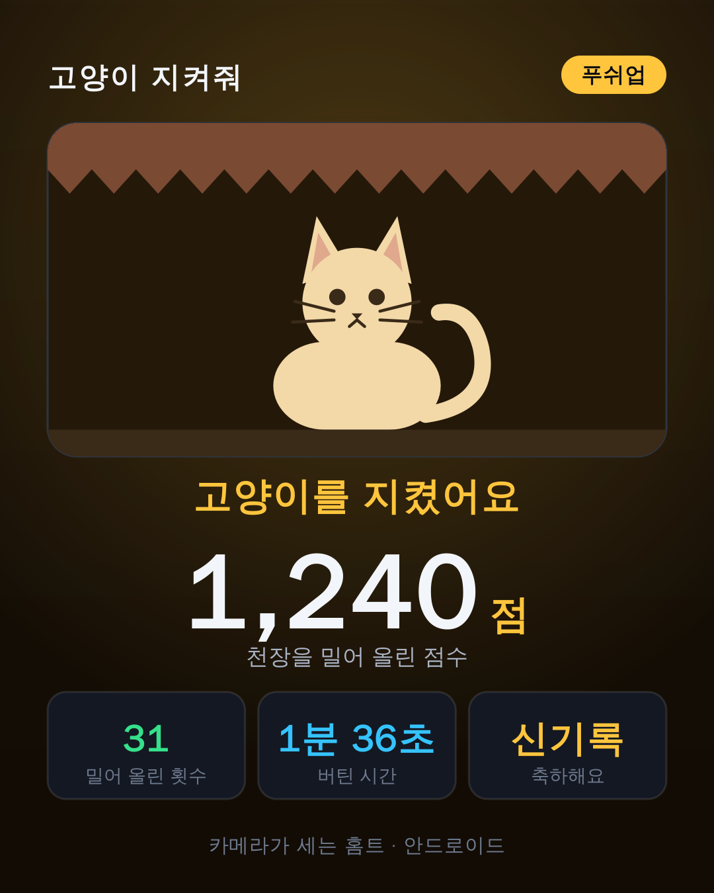

천장이 내려와요. 그 밑에 고양이가 있어요. 폰을 바닥에 세워 두고 운동하면 카메라가 한 개씩 세고, 한 개마다 천장이 올라가요. 깊게 할수록 더 높이 올라가요.
이메일만 받아요. 출시하면 한 번 알려드리고 끝이에요.
아직 스토어에 올라가기 전이에요. 준비되면 이 자리에 링크가 생겨요.
운동 앱이 지겨워지는 건 대부분 같은 이유예요. 몇 개 했는지 기억해야 하고, 제대로 한 건지 아무도 안 봐주고, 오늘 한 게 내일 아무것도 아니게 돼요. 세 가지 다 반대로 만들었어요.
어깨와 손목의 위치로 깊이를 재요. 카메라가 멀든 가깝든 같은 기준으로 세요. 폰은 바닥에, 머리 앞쪽이나 옆에 세워 두면 돼요.
세는 곳과 천장을 올리는 곳이 한 군데예요. 인정된 한 개는 반드시 천장을 밀어 올리고, 얕게 한 건 세지도 올리지도 않아요.
천장에 눌려도, 중간에 그만둬도 한 개수는 그대로 기록돼요. 기록은 올라가기만 하고 내려가지 않아요.
목숨 하나가 한 세트예요. 천장에 눌리면 1분 쉬고 다음 목숨으로 이어 가요. 쉬는 것까지가 운동이에요 — 급한 날엔 건너뛸 수도 있고요. 설명이 필요 없는 규칙이라, 운동을 처음 하는 사람도 30초면 알아요.

목숨을 잃어도, 며칠 쉬어도 줄어드는 숫자가 없어요. 오랜만에 와도 고양이는 반가워하기만 해요.
지금까지 태운 칼로리를 블루베리 한 알부터 치킨 한 마리, 쌀 한 가마니까지 음식으로 보여 줘요. 다음 음식까지 몇 개 남았는지도요.
운동마다 한 번에 가장 많이 한 기록을 처음 기록과 나란히 보여 줘요. 최고 점수도 운동마다 따로예요.
꾸준히 하다 보면 고양이가 리본, 털실 뭉치, 왕관, 오로라 배경 같은 선물을 30가지 넘게 찾아와요. 세트 기록을 깨면 츄르도 받아요. 츄르로는 캣타워, 택배 상자, 무대 배경처럼 선물로 안 나오는 20가지를 살 수 있어요. 이름과 털 색도 정할 수 있어요.
동작 인식은 전부 폰 안에서 일어나요. 카메라 화면은 운동하는 동안 화면에만 있고, 어디에도 기록되지 않고 서버로 올라가지도 않아요. 운동 기록은 앱이 어디로도 보내지 않고 기기에 저장돼요(휴대폰의 Google 백업을 켜 두었다면 그 백업에는 들어가요). 이용 통계와 오류 보고로는 개수·시간·기기 모델 같은 값 일부만 전송돼요. 무엇이 가는지는 방침 3항과 4항에 다 적혀 있어요.
개인정보처리방침 전문 읽기구독도, 체험 기간도, 광고도 없어요. 모든 운동과 목숨 열 개, 기록과 꾸미기까지 무료예요.
나중에 유료 기능이나 광고가 생기면 시작하기 전에 이용약관에 미리 알려드려요.
네. 동작 인식이 전부 폰 안에서 돌아가서 비행기 모드에서도 운동이 돼요.
팔굽혀펴기는 폰을 바닥에, 머리 앞쪽이나 옆으로 1m쯤 떨어뜨려 세워 두세요. 스쿼트는 폰을 정면에 두고, 다른 운동은 고르는 화면에 한 줄씩 적혀 있어요. 거리는 크게 상관없어요 — 깊이를 몸 크기에 맞춰 재기 때문에 카메라가 멀든 가깝든 같은 기준이 나와요. 너무 멀거나 가깝거나 몸이 잘리면 화면과 목소리로 알려줘요.
네. 처음에 각자 내려갈 수 있는 범위를 재고, 그 범위를 기준으로 판정해요. 남의 깊이가 아니라 오늘 내 깊이가 기준이에요.
어림값이에요. 몸무게를 묻지 않아서 65kg을 기준으로, 운동마다 알려진 운동 강도(MET)와 한 개에 걸리는 시간으로 계산해요.
지금은 안드로이드만 준비하고 있어요. 안드로이드에서 쓰는 사람이 생기면 그다음에 생각할 일이에요.
얕게 흔드는 걸로는 안 올라가요. 너무 빠른 하강, 한쪽으로 쏠린 자세, 위에서 아래로 내려갔다 오지 않은 동작은 개수로 안 쳐요. 다만 이건 경쟁 게임이 아니라 혼자 하는 운동이라, 속여서 손해 보는 건 본인이에요.